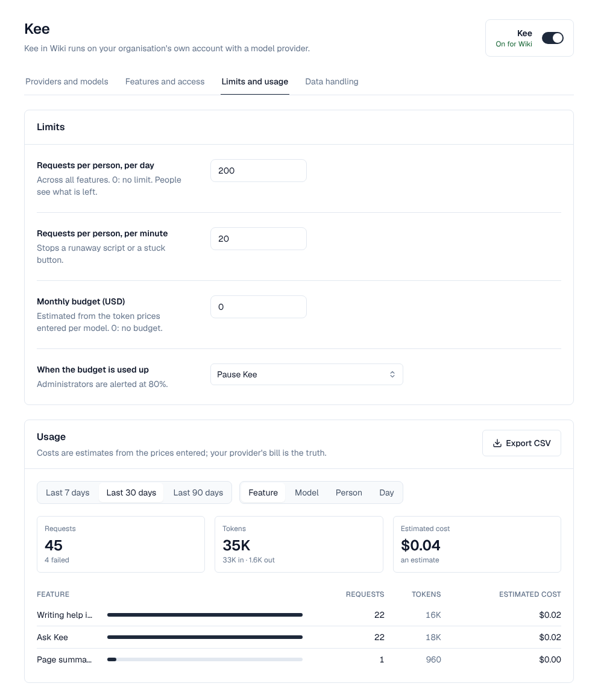

Settings → Kee → Limits and usage keeps a busy day from running up the bill and shows what Kee is used for.

1. Limits
| Setting | Default | Meaning |
|---|---|---|
| Requests per person, per day | 200 | Across all features. 0: no limit. Exact on every server; the day ends at midnight UTC. People see what is left |
| Requests per person, per minute | 20 | Stops a runaway script or a stuck button. Refusals also show in Settings → Security → Rate limits (class Kee requests) |
| Monthly budget | 0 (none) | Estimated spending of a calendar month (UTC), from the prices entered per model |
| When the budget is used up | Pause Kee | Pause Kee refuses requests until next month or until the budget is raised; Keep going and alert administrators only alerts |
- One request is one action of a person: one rewrite, one question, one new summary. A question that reads several pages, or a long page summarised in parts, is still one request. A reused summary is free.
- A refused request never counts.
- Administrators are alerted when the month's estimated spending reaches 80% and 100% of the budget.
- People see their own count under Profile → Kee; see Your daily limit.
- Trying an agent in Kee studio counts like a question. Applying a proposed change makes no request.
- Scheduled help has a budget of its own, separate from this one, so background work never uses up people's budget. Its requests have no person and no daily limit.
- Outside AI apps use their own model: their calls make no Kee request. They have a limit of their own (see Outside AI apps).
2. Usage
The usage report needs See usage (ai:usage:read). Choose the period (last 7, 30 or 90 days) and group by Feature, Model, Person or Day to see requests (and how many failed), tokens in and out, and the estimated cost.
- Costs are estimates from the prices entered per model; your provider's bill is the truth.
- By person, names are hidden unless Show people's names in usage reports is on under Data handling.
- Export CSV downloads the same report. Exporting by person needs Enterprise, and every export is in the audit log.
- Usage records hold who, which feature and model, and token counts: never the text. They are kept 13 months by default (see Data handling).
3. Scheduled jobs
| Job | When | What it does |
|---|---|---|
| ai-usage-rollup | Hourly at :20 | Rebuilds the last three days of the usage report's daily numbers |
| ai-usage-retention | Daily at 03:40 | Deletes usage records older than the retention you chose |
| ai-provider-check | Every 5 minutes, every server | Checks that this server reaches each provider |
See Scheduled jobs for the Wiki's own Kee jobs.